Statistical Analysis
Lab 12: DAGs
![]()
Intro
Setup
Open a new Quarto document and use this preamble:
---
title: "Lab 12"
author: "Your Name"
date: today
format:
html:
toc: true
number-sections: true
colorlinks: true
smooth-scroll: true
embed-resources: true
---Render and save under “week12” in your “stats” folder.
DAGs
What Are DAGs?
Directed Acyclic Graphs are theoretical models of how data is generated.
- Directed: arrows point from cause to effect
- Acyclic: no loops — causes flow in one direction
- They tell you what to control for to isolate a causal effect
- Build them at dagitty.net and replicate in R with
ggdag+dagitty
A Simple DAG
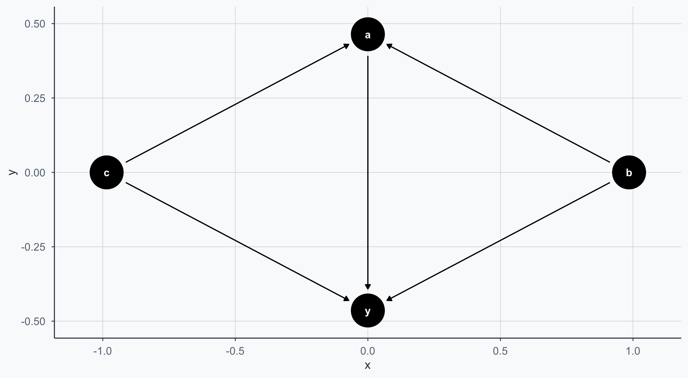
Controlling the Layout
We can convert the DAG to a dataframe with tidy_dagitty for more control:
set.seed(1234)
bigger_dag <- data.frame(tidy_dagitty(simple_dag))
ggplot(bigger_dag, aes(x = x, y = y, xend = xend, yend = yend)) +
geom_dag_point() +
geom_dag_edges() +
geom_label_repel(
data = subset(bigger_dag, !duplicated(bigger_dag$name)),
aes(label = name), fill = alpha("white", 0.8)
) +
theme_meridian()Controlling the Layout
We can convert the DAG to a dataframe with tidy_dagitty for more control:
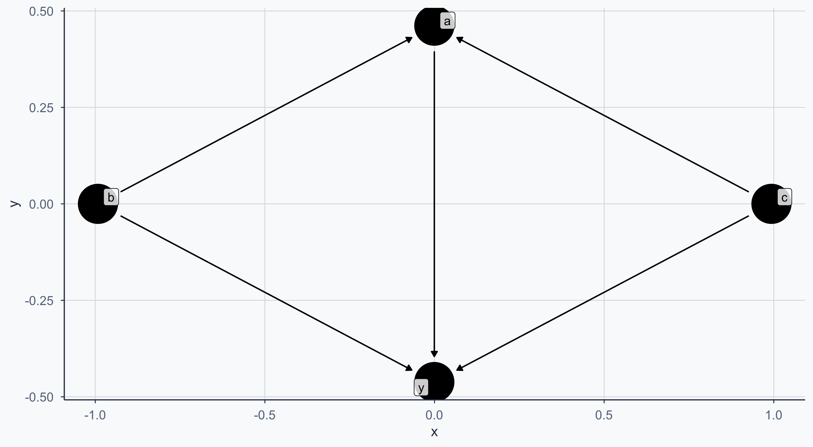
Exposure and Outcome
We can mark the exposure (treatment) and outcome nodes:
Exposure and Outcome
We can mark the exposure (treatment) and outcome nodes:
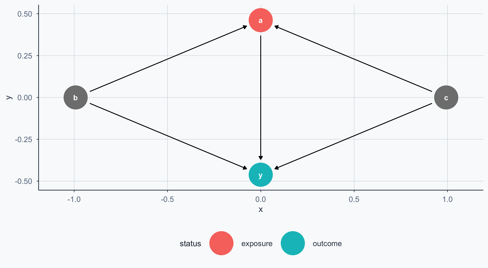
Custom Labels
Custom Labels
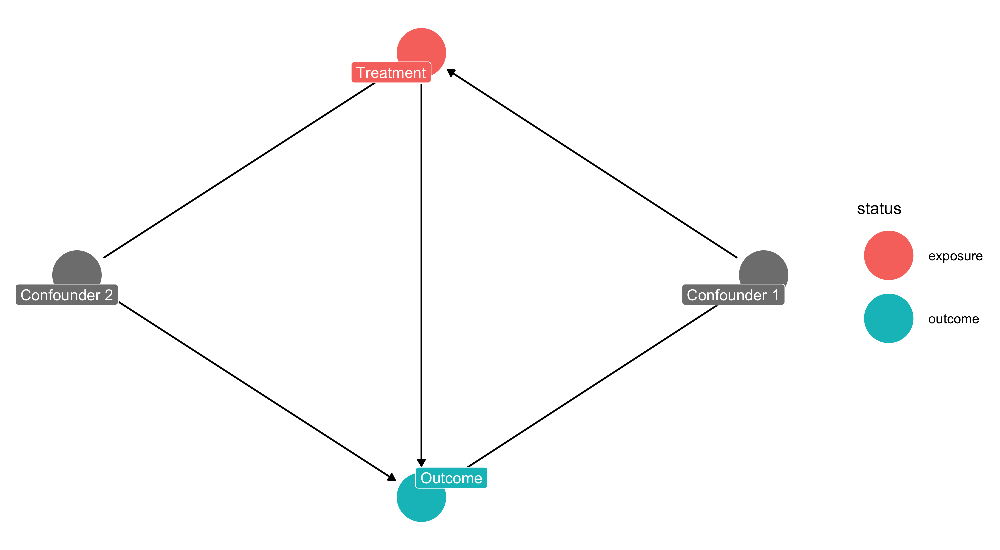
Importing from DAGitty
You can draw your DAG at dagitty.net and export the code directly into R:
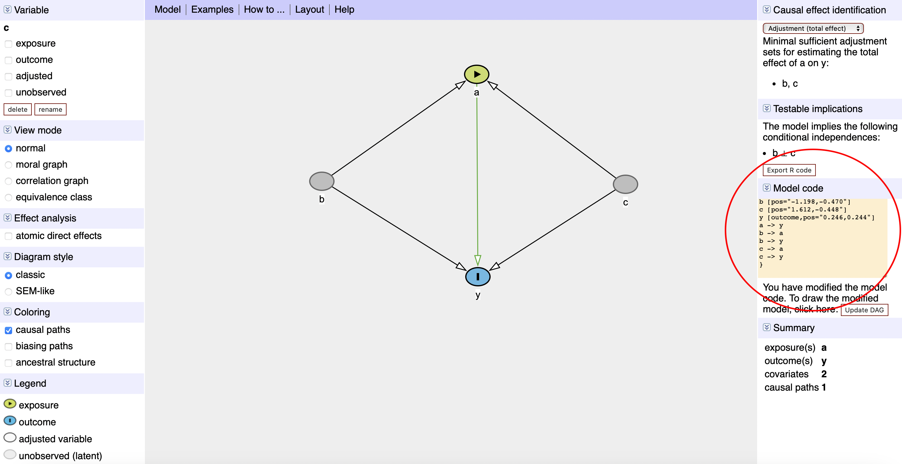
DAGitty Screenshot
DAGitty Code in R
DAGitty Code in R
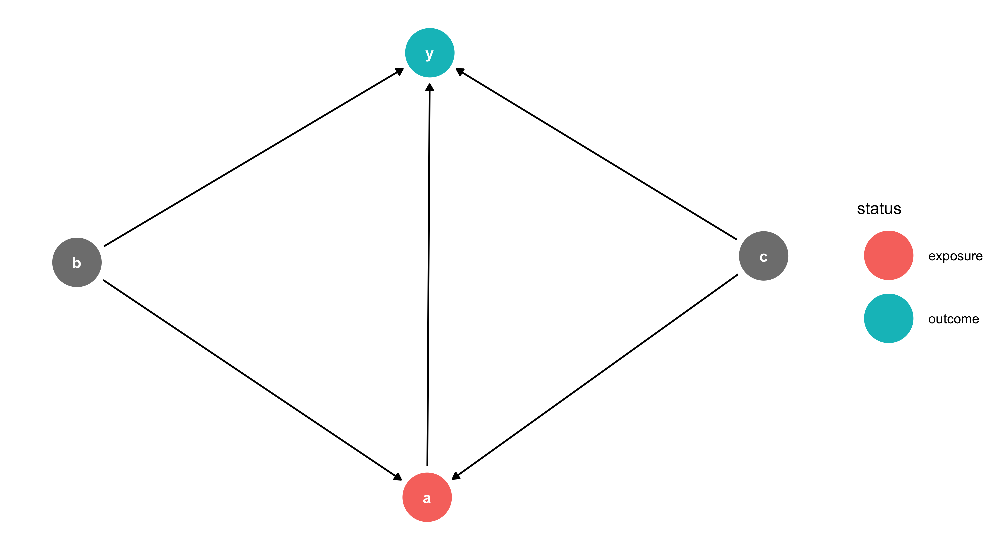
Each node has X/Y coordinates — adjust them to change the layout.
The Malaria DAG
From Lab 11: malaria risk is determined by nets, age, sex, income, and pre-malaria risk. Net usage is determined by income and pre-malaria risk.
Show code
malaria_dag <- dagify(
post_malaria_risk ~ net + age + sex + income + pre_malaria_risk,
net ~ income + pre_malaria_risk,
exposure = "net",
outcome = "post_malaria_risk",
labels = c(
post_malaria_risk = "Post Malaria Risk",
net = "Mosquito Net", age = "Age", sex = "Sex",
income = "Income", pre_malaria_risk = "Pre Malaria Risk"
),
coords = list(
x = c(net = 2, post_malaria_risk = 7, income = 5,
age = 2, sex = 4, pre_malaria_risk = 6),
y = c(net = 3, post_malaria_risk = 2, income = 1,
age = 2, sex = 4, pre_malaria_risk = 4)
)
)
bigger_dag <- data.frame(tidy_dagitty(malaria_dag))
bigger_dag$type <- "Confounder"
bigger_dag$type[bigger_dag$name == "post_malaria_risk"] <- "Outcome"
bigger_dag$type[bigger_dag$name == "net"] <- "Intervention"
min_x <- min(bigger_dag$x); max_x <- max(bigger_dag$x)
min_y <- min(bigger_dag$y); max_y <- max(bigger_dag$y)
col <- c("Outcome" = sage, "Intervention" = terracotta, "Confounder" = stone)
order_col <- c("Outcome", "Intervention", "Confounder")
ggplot(bigger_dag, aes(x = x, y = y, xend = xend, yend = yend, color = type)) +
geom_dag_point() +
geom_dag_edges() +
coord_sf(xlim = c(min_x - 1, max_x + 1), ylim = c(min_y - 1, max_y + 1)) +
scale_colour_manual(values = col, name = "Group", breaks = order_col) +
geom_label_repel(
data = subset(bigger_dag, !duplicated(bigger_dag$label)),
aes(label = label), fill = alpha("white", 0.8)
) +
labs(x = "", y = "") +
theme_meridian()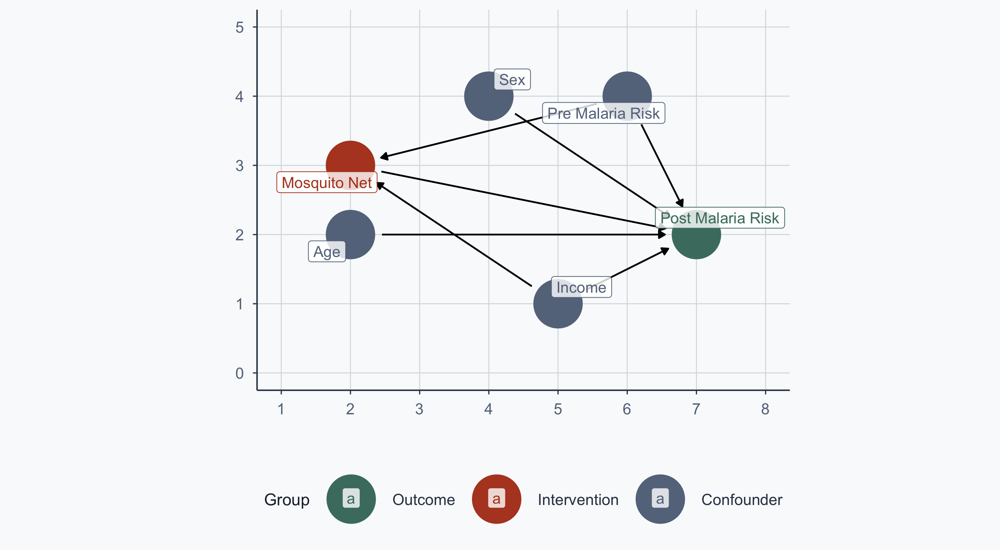
Matching
From RCT to Observational Data
In Lab 11, treatment was randomized — no arrows into the net node:
Show code
malaria_dag2 <- dagify(
post_malaria_risk ~ net + age + sex + income + pre_malaria_risk,
exposure = "net",
outcome = "post_malaria_risk",
labels = c(
post_malaria_risk = "Post Malaria Risk",
net = "Mosquito Net", age = "Age", sex = "Sex",
income = "Income", pre_malaria_risk = "Pre Malaria Risk"
),
coords = list(
x = c(net = 2, post_malaria_risk = 7, income = 5,
age = 2, sex = 4, pre_malaria_risk = 6),
y = c(net = 3, post_malaria_risk = 2, income = 1,
age = 2, sex = 4, pre_malaria_risk = 4)
)
)
bigger_dag2 <- data.frame(tidy_dagitty(malaria_dag2))
bigger_dag2$type <- "Confounder"
bigger_dag2$type[bigger_dag2$name == "post_malaria_risk"] <- "Outcome"
bigger_dag2$type[bigger_dag2$name == "net"] <- "Intervention"
ggplot(bigger_dag2, aes(x = x, y = y, xend = xend, yend = yend, color = type)) +
geom_dag_point() +
geom_dag_edges() +
coord_sf(xlim = c(min_x - 1, max_x + 1), ylim = c(min_y - 1, max_y + 1)) +
scale_colour_manual(values = col, name = "Group", breaks = order_col) +
geom_label_repel(
data = subset(bigger_dag2, !duplicated(bigger_dag2$label)),
aes(label = label), fill = alpha("white", 0.8)
) +
labs(x = "", y = "") +
theme_meridian()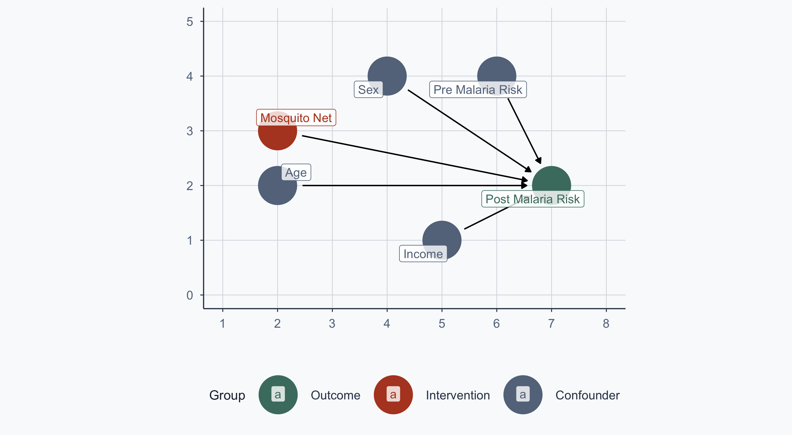
The Observational Problem
Now assume people choose whether to use a net. The confounding arrows return:
Show code
ggplot(bigger_dag, aes(x = x, y = y, xend = xend, yend = yend, color = type)) +
geom_dag_point() +
geom_dag_edges() +
coord_sf(xlim = c(min_x - 1, max_x + 1), ylim = c(min_y - 1, max_y + 1)) +
scale_colour_manual(values = col, name = "Group", breaks = order_col) +
geom_label_repel(
data = subset(bigger_dag, !duplicated(bigger_dag$label)),
aes(label = label), fill = alpha("white", 0.8)
) +
labs(x = "", y = "") +
theme_meridian()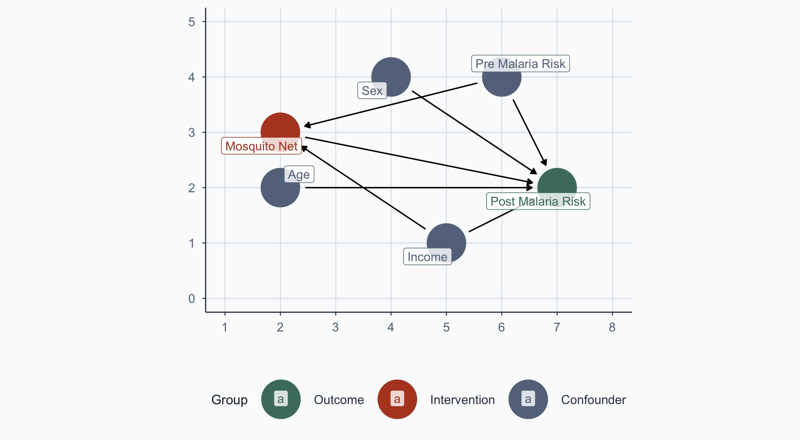
We want to estimate: \(\text{Malaria Risk} = \beta_0 + \beta_1 \text{Income} + \beta_2 \text{Treatment}\)
Loading the Data
Rows: 1,000
Columns: 10
$ id <int> 1, 2, 3, 4, 5, 6, 7, 8, 9, 10, 11, 12, 13, 14, 15, 1…
$ lat <dbl> -11.27476, -11.15300, -11.13967, -11.25544, -11.1777…
$ lon <dbl> 34.03006, 34.14594, 34.14297, 34.14619, 34.20031, 34…
$ income <dbl> 409.4701, 520.8072, 581.3331, 324.0727, 532.1844, 53…
$ age <int> 10, 35, 7, 43, 45, 51, 24, 17, 38, 69, 10, 21, 32, 3…
$ sex <chr> "Man", "Woman", "Woman", "Woman", "Man", "Woman", "M…
$ health <dbl> 82.78928, 81.18602, 80.57399, 82.84023, 87.40737, 57…
$ net <int> 0, 1, 0, 0, 1, 1, 1, 0, 1, 1, 1, 1, 1, 1, 0, 0, 0, 1…
$ malaria_risk_pre <dbl> 35.74454, 36.65260, 22.87415, 35.41934, 27.49873, 42…
$ malaria_risk_post <dbl> 42.52199, 34.27589, 32.67552, 43.87256, 27.16945, 41…Download: Intervention Data
Regression with Confounders
- For every unit increase in income, malaria risk decreases by ~0.045 units, holding net use constant
- People who use nets have ~10.1 units lower malaria risk, holding income constant
Why Not Just Control with OLS?
The regression above controls for income — so why do we need matching at all?
- OLS assumes a linear, additive relationship — if the functional form is wrong, the estimate is biased
- OLS extrapolates — it estimates treatment effects even where treated and control groups don’t overlap in confounder space
- Matching forces you to compare only comparable units, avoiding extrapolation entirely
Matching makes the comparison explicit; regression hides it in functional form assumptions.
Scatterplot: Pooled Regression Line
Show code
rct_data$type <- "Control\n Don't Use Nets"
rct_data$type[rct_data$net == 1] <- "Treatment\n Use Nets"
cols <- c("Control\n Don't Use Nets" = graphite,
"Treatment\n Use Nets" = terracotta)
x <- lm(malaria_risk_post ~ income, data = rct_data)
a <- x$coefficients[1]
b <- x$coefficients[2]
ggplot(rct_data, aes(x = income, y = malaria_risk_post, group = type)) +
geom_point(aes(shape = type, color = type), size = 2, alpha = 0.6) +
scale_shape_manual(name = "", values = c(16, 17)) +
scale_color_manual(name = "", values = cols) +
geom_segment(aes(x = min(income), y = a,
xend = max(income), yend = b * max(income) + a),
color = slate, linewidth = 0.8) +
scale_x_continuous(name = "Income") +
scale_y_continuous(name = "Malaria Risk") +
theme_meridian() +
theme(legend.position = c(0.15, 0.15))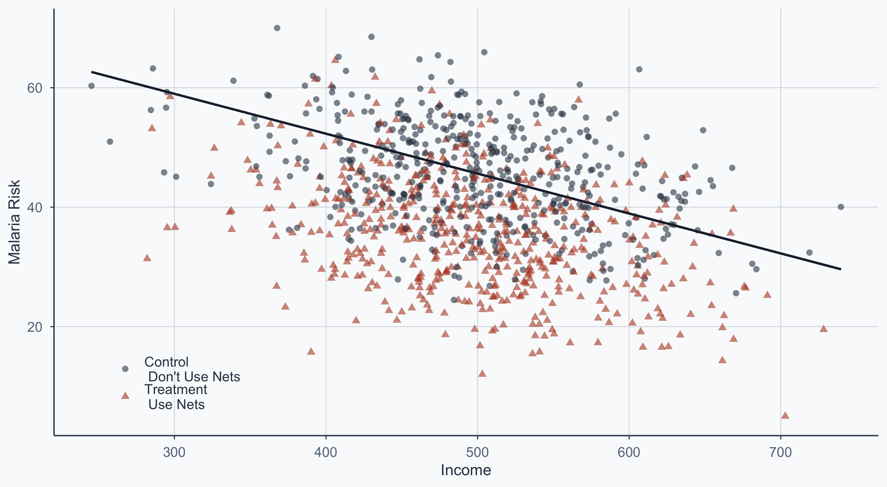
Pooled Regression Summary
Scatterplot: Separate Group Lines
Show code
x1 <- lm(malaria_risk_post ~ income, data = subset(rct_data, net == 0))
a1 <- x1$coefficients[1]
b1 <- x1$coefficients[2]
x2 <- lm(malaria_risk_post ~ income, data = subset(rct_data, net == 1))
a2 <- x2$coefficients[1]
b2 <- x2$coefficients[2]
ggplot(rct_data, aes(x = income, y = malaria_risk_post, group = type)) +
geom_point(aes(shape = type, color = type), size = 2, alpha = 0.6) +
scale_shape_manual(name = "", values = c(16, 17)) +
scale_color_manual(name = "", values = cols) +
geom_segment(aes(x = min(income), y = a1,
xend = max(income), yend = b1 * max(income) + a1),
color = graphite, linewidth = 0.8) +
geom_segment(aes(x = min(income), y = a2,
xend = max(income), yend = b2 * max(income) + a2),
color = terracotta, linewidth = 0.8) +
scale_x_continuous(name = "Income") +
scale_y_continuous(name = "Malaria Risk") +
theme_meridian() +
theme(legend.position = c(0.15, 0.15))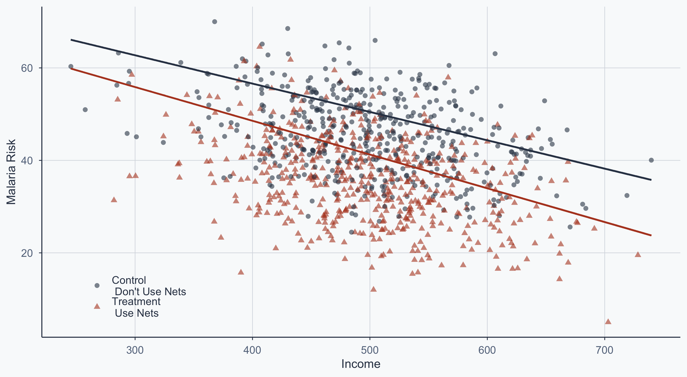
The vertical gap between the two lines is the treatment effect, conditional on income.
Matching: Mahalanobis Distance
Why Matching?
In observational data, treatment and control groups differ systematically on confounders.
- People who choose nets tend to have higher income and higher pre-malaria risk
- A naive comparison conflates the net’s effect with these pre-existing differences
- Matching finds comparable pairs: similar on confounders, but differing in treatment
Nearest Neighbor Matching
We use MatchIt to match on income and pre-malaria risk using Mahalanobis distance:
matched_ob <- matchit(
net ~ income + malaria_risk_pre,
data = rct_data,
method = "nearest",
distance = "mahalanobis",
replace = FALSE
)
matched_obA `matchit` object
- method: 1:1 nearest neighbor matching without replacement
- distance: Mahalanobis - number of obs.: 1000 (original), 956 (matched)
- target estimand: ATT
- covariates: income, malaria_risk_preWhich Observations Were Dropped?
matched <- match.data(matched_ob)
matched$type_match <- "Kept"
matched_mer <- subset(matched, select = c(id, type_match))
rct2 <- left_join(rct_data, matched_mer, by = "id")
rct2$type_match[is.na(rct2$type_match)] <- "Dropped"
rct2$type_match_fin <- rct2$type
rct2$type_match_fin[rct2$type_match == "Dropped"] <- "Dropped"
fixed <- subset(rct2, type_match_fin != "Dropped")
fixed_dropped <- subset(rct2, type_match_fin == "Dropped")
head(fixed_dropped, n=5) id lat lon income age sex health net malaria_risk_pre
922 922 -11.27303 34.06292 469.1548 30 Man 46.65226 1 50.72628
923 923 -11.15976 34.15160 528.6761 29 Man 68.75519 1 43.87560
930 930 -11.18827 34.02909 442.4063 24 Woman 69.66138 1 44.33456
931 931 -11.21571 34.20041 485.5473 27 Woman 52.71393 1 57.68744
932 932 -11.17675 34.08594 571.9288 50 Man 62.96108 1 45.10550
malaria_risk_post type type_match type_match_fin
922 48.49282 Treatment\n Use Nets Dropped Dropped
923 41.93094 Treatment\n Use Nets Dropped Dropped
930 39.94100 Treatment\n Use Nets Dropped Dropped
931 49.89029 Treatment\n Use Nets Dropped Dropped
932 41.00261 Treatment\n Use Nets Dropped DroppedMatched Scatterplot
Blue points = dropped by matching. The remaining points are comparable pairs.
Show code
ggplot(rct2, aes(x = income, y = malaria_risk_pre, group = type_match_fin)) +
geom_point(data = fixed_dropped, aes(shape = type),
color = "steelblue", size = 4, alpha = 0.4) +
geom_segment(aes(x = min(income), y = a1,
xend = max(income), yend = b1 * max(income) + a1),
color = graphite, linewidth = 0.8) +
geom_segment(aes(x = min(income), y = a2,
xend = max(income), yend = b2 * max(income) + a2),
color = terracotta, linewidth = 0.8) +
geom_point(data = fixed, aes(shape = type_match_fin, color = type_match_fin),
size = 2) +
scale_shape_manual(name = "", values = c(16, 17)) +
scale_color_manual(name = "", values = cols) +
scale_x_continuous(name = "Income") +
scale_y_continuous(name = "Pre-Malaria Risk") +
theme_meridian() +
theme(legend.position = c(0.15, 0.15))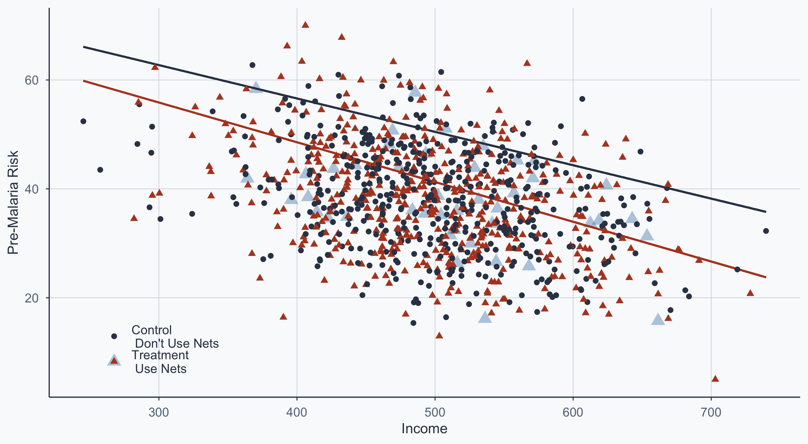
Did Matching Improve Balance?
Show code
bal <- summary(matched_ob)
bal_before <- data.frame(
Variable = rownames(bal$sum.all),
`Mean Treated` = round(bal$sum.all[, "Means Treated"], 2),
`Mean Control` = round(bal$sum.all[, "Means Control"], 2),
`Std. Mean Diff.` = round(bal$sum.all[, "Std. Mean Diff."], 4),
check.names = FALSE
)
bal_after <- data.frame(
Variable = rownames(bal$sum.matched),
`Mean Treated` = round(bal$sum.matched[, "Means Treated"], 2),
`Mean Control` = round(bal$sum.matched[, "Means Control"], 2),
`Std. Mean Diff.` = round(bal$sum.matched[, "Std. Mean Diff."], 4),
check.names = FALSE
)
knitr::kable(bal_before,
caption = "Before Matching: Mean confounder values for treated vs. control (all observations)",
row.names = FALSE) |>
kableExtra::kable_styling(font_size = 18, full_width = FALSE)| Variable | Mean Treated | Mean Control | Std. Mean Diff. |
|---|---|---|---|
| income | 497.56 | 498.50 | -0.0125 |
| malaria_risk_pre | 37.96 | 37.97 | -0.0010 |
Show code
| Variable | Mean Treated | Mean Control | Std. Mean Diff. |
|---|---|---|---|
| income | 496.54 | 498.50 | -0.0260 |
| malaria_risk_pre | 37.94 | 37.97 | -0.0026 |
- Std. Mean Differences are already near zero before matching — this data comes from an RCT
- Matching on already-balanced data doesn’t improve balance
- In truly observational data, you would expect mean differences to shrink substantially after matching
Naive vs. Matched Regression
x1 <- lm(malaria_risk_post ~ net, data = rct_data)
x2 <- lm(malaria_risk_post ~ net, data = matched)
models <- list("Naive Regression" = x1,
"Matched" = x2)
modelsummary(models, stars = TRUE, gof_map = c("nobs", "r.squared"))| Naive Regression | Matched | |
|---|---|---|
| + p < 0.1, * p < 0.05, ** p < 0.01, *** p < 0.001 | ||
| (Intercept) | 45.662*** | 45.662*** |
| (0.415) | (0.417) | |
| net | -10.083*** | -10.069*** |
| (0.574) | (0.589) | |
| Num.Obs. | 1000 | 956 |
| R2 | 0.236 | 0.234 |
The net coefficient is slightly smaller after matching — part of the naive estimate was driven by confounding.
Matching: Inverse Probability Weighting
The Problem with Dropping Observations
Nearest-neighbor matching can be costly: unmatched observations are discarded.
An alternative: Inverse Probability Weighting (IPW) — keep all observations, but re-weight them so that the treated and control groups look comparable.
Step 1: Estimate the Propensity Score
The propensity score is the probability of receiving treatment, given confounders:
model_pre <- glm(net ~ income + malaria_risk_pre,
data = rct_data,
family = binomial(link = "logit"))
modelsummary(list(model_pre), stars = TRUE, gof_map = c("nobs", "r.squared"))| (1) | |
|---|---|
| + p < 0.1, * p < 0.05, ** p < 0.01, *** p < 0.001 | |
| (Intercept) | 0.213 |
| (0.606) | |
| income | -0.000 |
| (0.001) | |
| malaria_risk_pre | -0.001 |
| (0.007) | |
| Num.Obs. | 1000 |
Step 2: Calculate IPW
The IPW formula:
\[\frac{\text{Treatment}}{\text{Propensity}} + \frac{1-\text{Treatment}}{1-\text{Propensity}}\]
The Intuition Behind IPW
Why does this formula work?
- A treated person with a high propensity score (e.g., 0.9) gets weight \(\frac{1}{0.9} \approx 1.1\) — they’re unsurprising, so low weight
- A treated person with a low propensity score (e.g., 0.2) gets weight \(\frac{1}{0.2} = 5\) — they’re unusual (treated despite low likelihood), so high weight
- This upweighting creates a pseudo-population where treatment is independent of confounders — mimicking randomization
In effect, IPW asks: “What would the treatment effect look like if everyone had the same probability of being treated?”
Comparing the Datasets
rct_data2 <- subset(rct_data, select = -c(lat, lon, type, health, malaria_risk_pre))
head(rct_data2, n = 5) id income age sex net malaria_risk_post
1 1 409.4701 10 Man 0 42.52199
2 2 520.8072 35 Woman 1 34.27589
3 3 581.3331 7 Woman 0 32.67552
4 4 324.0727 43 Woman 0 43.87256
5 5 532.1844 45 Man 1 27.16945rct_ipw2 <- subset(rct_ipw, select = -c(lat, lon, type, health, malaria_risk_pre))
head(rct_ipw2, n = 5)# A tibble: 5 × 8
id income age sex net malaria_risk_post propensity ipw
<int> <dbl> <int> <chr> <int> <dbl> <dbl> <dbl>
1 1 409. 10 Man 0 42.5 0.527 2.11
2 2 521. 35 Woman 1 34.3 0.521 1.92
3 3 581. 7 Woman 0 32.7 0.520 2.08
4 4 324. 43 Woman 0 43.9 0.531 2.13
5 5 532. 45 Man 1 27.2 0.522 1.92IPW Scatterplot
Point size reflects the inverse probability weight — unusual observations get more weight:
Show code
rct_ipw3 <- subset(rct_ipw2, select = c(id, ipw))
rct3 <- left_join(rct2, rct_ipw3, by = "id")
ggplot(rct3, aes(x = income, y = malaria_risk_pre)) +
geom_point(aes(shape = type, color = type, size = ipw), alpha = 0.6) +
scale_shape_manual(name = "", values = c(16, 17)) +
scale_color_manual(name = "", values = cols) +
scale_size_continuous(name = "IPW", range = c(1, 6)) +
scale_x_continuous(name = "Income") +
scale_y_continuous(name = "Pre-Malaria Risk") +
theme_meridian() +
theme(legend.position = "right")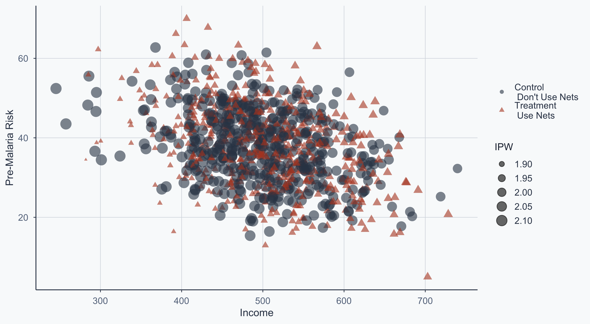
Three-Way Comparison
x1 <- lm(malaria_risk_post ~ net, data = rct_data)
x2 <- lm(malaria_risk_post ~ net, data = matched)
x3 <- lm(malaria_risk_post ~ net, data = rct3, weights = ipw)
models <- list("Naive Regression" = x1,
"Matched" = x2,
"IPW" = x3)
modelsummary(models, stars = TRUE, gof_map = c("nobs", "r.squared"))| Naive Regression | Matched | IPW | |
|---|---|---|---|
| + p < 0.1, * p < 0.05, ** p < 0.01, *** p < 0.001 | |||
| (Intercept) | 45.662*** | 45.662*** | 45.659*** |
| (0.415) | (0.417) | (0.404) | |
| net | -10.083*** | -10.069*** | -10.075*** |
| (0.574) | (0.589) | (0.572) | |
| Num.Obs. | 1000 | 956 | 1000 |
| R2 | 0.236 | 0.234 | 0.237 |
Three-Way Comparison
Both matching and IPW adjust the naive estimate downward — the raw difference partly reflected confounding, not the causal effect of nets.
Conclusion
When to Use What?
| Method | Keeps all obs? | Requires model? | Best when… |
|---|---|---|---|
| Mahalanobis matching | No | No (but assumes distance metric is appropriate) | Good overlap, few confounders |
| IPW | Yes | Yes (logit) | Losing too many observations |
In this example, we only lost 44 observations (1000 → 956), so Mahalanobis matching is acceptable. With more imbalanced data, IPW preserves sample size.
Key Takeaways
- DAGs encode your causal assumptions — they tell you what to control for
- Without randomization, confounders create back-door paths that bias naive estimates
- Matching creates comparable groups by pairing similar treated and control units
- IPW re-weights observations instead of dropping them — a different solution to the same problem
- In this case, both methods adjust the treatment effect downward — the naive estimate partly reflected confounding, not causation
Popescu (JCU) Statistical Analysis Lab 12: DAGs